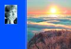

Юлия Чугай
Солнце за облаками

Часть 1
Здравствуй, Солнце!
Из юной тетради
* * *
Здравствуй, Солнце! Я - твоя ровесница!
Преломляюсь в огненных лучах,
Трогаю руками бесконечность
И целуюсь с ветром по ночам.
Здравствуй, Солнце! Пусть лучи доверчиво
Прикоснутся к моему лицу -
Мы с тобой существовали вечно,
Светом рассекая темноту.
Ты не думай: "Вот еще нахальная!"
Просто я представить не могу,
Что вертелся этот милый шарик,
Намотав твоих лучей лоскут,
Что росли зеленые деревья,
Шли дожди, стекляшками звеня,
Понимаешь, просто я не верю,
В то, что это было без меня!
1969 г.
АССОЛЬ
Когда я до утра ресницы не сомкну,
Или когда мне снятся крики чаек -
Я об одном молчу и одному
И сны свои, и строчки посвящаю.
Когда рассветным лучиком лечу,
Когда промозглым городом шагаю,
Когда и улыбаюсь, и шучу,
Тебе и шутку, и улыбку отсылаю.
Когда мне холодно одной среди планет,
Среди дыхания неведомой вселенной,
Я о тебе подумаю - и нет
Ни холода, ни гибели, ни тлена.
И пусть мне говорят, что ты - мой бред,
Что нет тебя, что космос необъятен,
А на стареющей заплеванной Земле,
Нет ни следов твоих, ни даже белых пятен.
Я чувствую твой свет, твое тепло!
Средь ядерной зимы дохнуло летом!
Мы разминулись - только и всего:
Нельзя встречаться звездам и кометам...
1968 г.
* * *
Я хочу быть древней египтянкой
С темными глазами южной ночи,
Смуглой кожей и прохладным телом,
Чтобы защитить тебя от зноя.
Я хочу быть древней египтянкой,
Чтоб без колебаний и раздумья
Пасть к ногам твоим, о мой любимый,
Обувь целовать с благоговеньем.
Я хочу быть древней египтянкой,
Чтобы верить в то, что после смерти
Снова буду жить, любить, смеяться,
Буду обнимать твои колени...
Я хочу быть древней египтянкой,
Но Египет далеко отсюда,
Древность стала рухлядью и прахом,
И гробницы - то жилище смерти...
1969 г.
ПЕСЕНКА
Ах, что я запомню,
что вспомню-припомню -
не руки твои, нет, не руки,
а чёрный тот воздух,
тот воздух огромный
в преддверии утра.
И улиц ночные
пустые провалы,
и запах древесный,
и утренний свежий
ветер весенний
в преддверии песен.
70 г.
* * *
В утро вхожу, как в воду -
С пупырышками на теле,
Утреннею сурепкой
Бреду, как песчаной мелью.
В листья вхожу и в травы,
В дождик, в лиловость неба,
В голос вхожу по праву
Молодости!
В нежность твою, как в лаву
Огненную - бесправно
И равной.
1970 г.
МЕДЛЕННЫЙ ТАНЕЦ
Миг одуряюще-немых прикосновений,
короткий миг дразнящего тепла
и сладостно-замедленных движений -
там всё живое, где рука легла.
И так далек и гулок, как рыданье,
тот вечный миг утраты, а пока
всё горячей, всё сдержанней дыханье
у светлого, душистого виска.
* * *
Солнце во все окно:
Словно смеется женщина!
Красным блестит стекло,
Чувствую: вечер, вечер...
Блики целую твои,
Щурю от света веки...
Слышу, как где-то внутри
Бьется весенний ветер.
В свежую траву упав,
Слышу, глаза закрывая,
Шепчет листва слова,
Музыка их - живая...
1970 г.
* * *
В лето слепых дождей -
Солнце! А дождик - рядом.
Летом всего нежней
солнечная прохлада.
Словно и нет туч -
льётся прозрачный ливень,
по моему лицу
влажные бьют крылья!
Может быть, льёт дождь?
Может - моя радость?
А, может быть, ты идёшь
рядом?!
* * *
Завалена память - ни дат и ни вех,
ни слова, ни смеха, Нелепо
Остался лишь тополь, ныряющий в снег
дельфином - в кромешное небо.
Остался облезлый забор за окном,
плывущий в ненастливый вечер,
и детский конёк, занесённый снежком,
и в комнате - зарево печи.
И девочка дышит в стекло, а потом
внимательно смотрит, стараясь
увидеть, как тополь летит напролом
и снежная пыль оседает...
* * *
А я родилась, чтоб утром
Весенним, идти, лучась,
Средь черных стволов деревьев,
Наполненных влагой -
Час жизни моей, рассветный,
Чтоб выдохнуть и отдать,
Миг скорости, чтоб пожать
Вселенскую руку ветра.
1970 г.
* * *
В глазах певуньи Цзинъ свет молодой листвы
и потому она письмо капелью пишет,
и кисточка её за капелькой скользит,
стекающей по веточке ожившей.
Как ждут её письма в краю небесных битв,
где кружит эхо сабельного звона,
где на снегу усталый воин спит,
прикрытый тряпкою со знаками дракона.
* * *
К тебе иду за хлебом и светом,
Земля, где живу, где воля ветру,
Где я стреножена, где задыхаюсь
И не найду себе места.
Где чувствую в пальцах, бумаги касаясь,
Крылья феникса.
1972 г.
* * *
Так легок поцелуй с ледком
в осенней рощице прозрачной
под неподвижным, словно спящим,
последним радужным листком.
И странно видеть мне, что в нём
рисунок повторён моей ладони,
что осени короткий светлый сон
бездонен...
* * *
Ударил медный колокол осени...
Иду на зов, ощущая,
как в сердце проникает холод.
Из смерти пришла я
и ухожу - в ничто.
Ударил
медный колокол осени.
ПРИЗНАНИЕ
Октябрь - мой жестокий любовник,
единственный на весь свет - любимый.
Багровый вестник
ветровых песен
одиночества...
* * *
Как тонок гвоздичек! Казнящий
как груз тяжёл:
весь мир вмещён в почтовый ящик
с пустым глазком.
Весь мир - больнее и короче,
чем ждущий взгляд.
Мой мир! Один лиловый росчерк.
Письма квадрат.
* * *
Проходишь. Прохожий.
Сквозь губы и слёзы,
сквозь сердце - навылет
проходишь, прохожий.
Вот красною точкой
маячишь на чёрном -
уходишь. Любимый!
Всё точно.
Прохожий.
* * *
И снова - языческий танец
по жилам моим пробежал.
И выткано поле - словами,
и каждое слово - пожар.
И в пляске моей - обречённость,
уже предсказала Луна,
что в жертву любимому Солнцу
я буду принесена.
Но всё же - языческой чёлкой
я в пляске предсмертной взмахну,
и душу чужую, наверно,
ещё не одну обману.
* * *
О, Скорый!
Ты - единственный убийца
скользящих девочек по колее стальной.
Я вижу небо цвета угля над собой
и насыпь, окаймленную полынью.
Пока затылок шпалу ощутит -
еще мгновенье...
Я еще увижу в полнеба красный Диск
и тоска
прорежет на душе моей кривую,
пока стальную грудь твою,
мой брат,
я теплыми губами поцелую.
* * *
Медленно всходит Солнце...
Над диким, заросшим болотом
лечу одинокой уткой.
Лечу, ожидая минуты,
когда беспечный охотник
вскинет ружьё - и, не целясь,
свинцом начинит мне сердце,
и сунет в охотничью сумку,
пропахшую кровью и потом.
И медленно всходит солнце
над почерневшим болотом.
* * *
Не любовник ты, а палач,
имя боли моей - Октябрь.
Посмотри - окровавлен плащ
и по рощам - дымок огня.
Выжег, милый, глаза Весны.
Не болит, покраснев, листва,
но поля так молчат, черны,
так сожжённая роща - пуста.
Чем весенней последний куст,
тем любовная ласка злей.
Чуть живая, сама свечусь
красным бредом твоих лучей.
НОЧЬ
"Отрадней спать, отрадней камнем быть"
Ф. Тютчев
Почти с языческою жаждой жить,
превозмогая мышц застывший камень,
о, как мучительно хочу глаза открыть,
но слишком мозг мой одурманен снами.
Мой вечный склеп - постель моя жестка,
и голос вечности во мне окаменелый,
и вместо сердца здесь, под грудью левой,
окаменевшая тоска.
* * *
Скупые строки весны моей,
её глухие, меркнущие тени -
как закоулки памяти.
Орфей - почти неслышимый,
и вновь - беспомощность строки
и невозможность голосом охрипшим
вернуть...
ЯЗЫЧЕСТВО
Те же поем песни,
и пляски водим всё те же -
пляски любви и боли,
пляски жизни и смерти.
И так же нас оглушает
весенний разлив крови,
и в жертву все так же приносим
самую чистую душу...
* * *
Сквозь первую радость утра,
сквозь влагу весенних гроз,
сквозь толпы имущих, мудрых,
где души навеки врозь.
Сквозь толщу листов и строчек,
сквозь пресность часов и бед,
сквозь холод последней ночи
и дружбы неровный свет.
Сквозь краткую ложь прозрений,
сквозь быта постыдный плен,
сквозь честность бессонных бдений
до содранных вкровь колен.
Сквозь медь подаяний, жгущих
мне руку, сквозь вкривь и вкось,
сквозь тайно меня зовущий
надежно забитый гвоздь.
Сквозь жизнь прохожу, сгорая
от дара любить, туда,
где гаснет заря, мерцает
вечно светла звезда.
1982 г.
* * *
Итог моих случайных снов -
мои стихи - мой остров
Забвения,
мой миг, мой мир,
моя любовь,
мой танец избранницы
твоих, Весна, священных слов.
1975 г.
* * *
День мой и ночь моя,
и Солнце,
садящееся в зеленую озимь,
и замерзшее Азовское море,
и наливающаяся молоком грудь,
и звуки трубы,
залетевшие в темноту скорого поезда,
и мерцающие огни автострад,
и о чем-то печально поет Клаудиа Вилла,
и неисповедимые пути твои,
Любовь моя,
и все это - одно вселенское мгновение,
случайно попавшее в десятку
моего сердца.
ДЭЗИ ГРАНТ
Швырнёт меня волна морская
на берег глинистый Азова,
я снова поплыву, и снова
швырнёт меня волна морская...
И ветер юности далёкой,
что пахнет дыней и полынью,
солёной влагой, сладкой пылью,
обдаст горячим кровотоком,
подхватит - и начнется слалом
над степью, водами, горою,
над путником, пловцом, тобою,
над бездной и девятым валом.
Покажется обычным делом
весь этот мир, живой, бессонный,
наполненный цикадным звоном,
спасать от гибели и тлена.
Не бойся же, не плачь, отчаясь,
средь бед полуночной дороги:
я стала Дэзи легконогой,
уже бегу, чуть волн касаясь...
22.06.04
* * *
Это соловей, а не жаворонок...
У. Шекспир, "Ромео и Джульетта".
Это не жаворонок, а соловей
Утро разбудит твое.
С пеньем его и нежней и острей
утреннее бытие.
Пусть ускользает, как утренний сон
Сумрак и тишина.
Ты же этот небесный звон
слушать сейчас должна.
Что там завтра? Погром? Война?
Старость страшнее их!
Или Ромео, сойдя с ума,
Забудет твои стихи?
Юность, утро, разлука, смерть
Пение соловья...
Видишь, настежь открыта дверь
Вечного бытия!
Часть 2
С теплом и любовью
* * *
А счастье всего-то -
солнце после дождя...
и дождь оглушительный
после безмерного солнца.
Все нити порвутся
любви и тепла, но земля
с теплом и любовью
навстречу тебе развернется...
* * *
Робкое сердце, сёстры,
пугливое сердце -
движет мирами.
Сквозь холод и мрак
лет световых
мерцает и греет
хрупкое сердце.
Ржавую землю напоит
и одинокую душу
жизнью наполнит -
слабое сердце.
Болью наполнясь до края,
капли её не уронит
гордое сердце.
Бедное сердце, сёстры,
одинокое сердце...
1982 г.
* * *
Под серым осенним небом,
по грязному талому снегу,
мимо окон,
излучающих тёплый свет радости,
где смеются маленькие девочки,
а женщины играют на фортепиано
или готовят к ужину
котлеты в томатном соусе,
мимо этих окон,
мимо гнущихся от ветра
тонких стволов озябших деревьев
бродит тоска.
Тоска - это женщина
со щучьими зубами
и ледяным сердцем.
Опасайтесь её, мужи,
стоящие на страже своих гнезд,
где пушистые цыплята нежности
греются возле самого сердца,
не подозревая, что за их порогом
бродит тоска.
Тоска - это женщина
со щучьими зубами
и ледяным сердцем.
* * *
Как ты непрочен, вдох! В ладони сына
так линии неведомо бегут
и так страшны скрещенья и обрывы...
И с каждым вдохом - рук теснее круг
моих. И ни одна не удержала -
в височных жилках гул весенних вод!
И так всегда - от вдоха до начала
бессмертия...
* * *
Ты всё бежишь, мой мальчик,
в день, наполненный моей любовью,
в бесконечность моей памяти...
Ты бежишь по солнечным бликам
маленькой улочки,
затерянной во вселенной,
и чему-то улыбаешься,
зажав в руке початок кукурузы.
Ты будешь бежать так всегда,
нисколько не утомляясь,
и твоё худенькое тельце
будет нежно просвечивать
в бесконечности моей памяти,
в бесконечности моей любви...
ГОРЛОВКЕ
В черном небе Донбасса
я видела багровое солнце...
Я спешила перейти
железнодорожное полотно,
и мост, по которому я шла,
был цвета неба
и вздрагивал, как живой,
потому что поезда
грозили ему крушением,
и солнце, стиснутое
черным донбасским небом,
предвещало конец света...
* * *
Из хрупкого инея соткана
утренняя тишина.
Дымкой молочной окутаны
дремлющие дома.
Ночь размыкает объятия,
тает сосулькой в горле.
В нежном небесном платье
Солнце целует город...
Отсветом алым вспыхнули
зеркала сонных окон.
Вот и шаги Твои легкие
ветер принес с Востока...
Трамвай прозвенел далёкий
музыкой битых стекол...
Прощай, книжный призрак детства,
спящее королевство!
Ящик стола задвинув,
бороться пора с дремотой,
будить с сожаленьем сына,
спешить на работу...
* * *
Я живу в абсурдном мире.
Один мой знакомый поэт
назвал его наоборотным.
Здесь нет любви,
нет веры и нет милосердия.
Он похож на трясину,
из которой невозможно выбраться.
Здесь люди не знают,
зачем они живут,
зачем страдают,
зачем умирают.
Но, если поднимешь голову,
то увидишь другой мир.
Там ласково сияют
далёкие близкие звёзды,
и ты можешь улыбнуться им в ответ
или прошептать о своей любви.
И они поймут тебя и утешат.
А утром ты увидишь
синее небо и облака,
а за ними скрывается солнце.
И ты почувствуешь его тепло и свет
сквозь ветви деревьев,
таких же беззащитных,
как и ты,
твоих сестёр и братьев,
которым ты ничем не можешь помочь.
* * *
Где ты, Человек,
который может научить
любить Бога и жизнь,
потому что сам возлюбил,
как Отец, брат, Сын человеческий.
Потому что ему ничего не нужно,
кроме этой любви,
и любви Бога.
Тебе нужен этот человек,
его исцеляющая любовь,
его чистота и забота
о твоей душе,
которая напоминает лохмотья.
И, может быть, тогда она станет
чистой, цельной и спокойной,
и Бог расправит над ней
крылья свои
и пошлёт тебе ангела.
Тсс... Ангел уже склонился
над тобой.
Спи.
* * *
Благоговею перед чистотою
небесной,
безмолвным снежным танцем
заворожена...
Прекрасно все: дома,
прохожих лица.
Снегурочка, Зима и белизна
в открытое окно мое струится...
* * *
Проходишь, каменеешь, таешь
и скифской бабою степной
не замечаешь грачьи стаи,
сырых полей полёт взрывной,
лесополос, лежалых листьев
отмерший, почерневший наст,
идёшь без цели и без смысла,
без радости в пустых глазах.
Но - удивлённо и застыло,
с тупым отчаяньем в груди
вдруг столбенеешь: было, было!
Немного память напряги!
Тот день, особенный, как запах,
где щедрость юности ровня,
застывший в солнечных накрапах
навек ослепшего дождя.
Так и стоишь, припомнить силясь,
врастая в глинозём степи -
А ветер ласковою пылью
заносит горести твои.
ДЕРЕВЬЯМ
Спасибо, деревья, за добрые ваши дары
за ваши живые, наивные, светлые души!
Вы так бескорыстны и так бесконечно мудры,
что в вашей тиши сам невольно становишься лучше.
Лесные отшельники, в вашей блаженной тени
под пение птиц и ветров так легко не проснуться...
Мне было всегда одиноко и трудно с людьми,
и только к деревьям хотелось душой прикоснуться.
* * *
Понимаешь, это приходит Осень
на свидание с любимым, которого нет.
Ветер треплет насмешливо ее длинные рыжие косы.
Осень тихо проходит, роняя оранжевый свет.
Неужели не видишь, какая прощальная горечь,
и как холодом Осени краешек мира согрет?
Это Осень приходит, распустив свои рыжие волосы,
на свиданье с любимым, которого нет.
* * *
Снег белизной и свежестью
ранит душу,
напоминая о родственной
с нею связи.
Снег своим ясным праздником,
ранит сердце,
напоминая любовь забытую
и несбывшуюся.
Снег, чистый, искрящийся, утренний,
дарит радость,
напоминая о радости
моего сына...
ТРИ ГОРОДА
Тонконогой и светлогривой,
солнцем утра ослеплена,
птицей радостно-сиротливой
вижу девочку у окна.
В Н-ском городе, в н-ном веке
в черно-белом немом кино
старых улиц промозглых реки
захлестнули ее окно.
Пепел юности, копоть, сажа,
дней обугленных полумрак...
Этот город - твоя пропажа,
твой погасший давно маяк.
Старый зонт, да буханка хлеба,
да утерянной мысли нить.
Этот город - твоя "победа",
никому их не отменить.
Февраль 2008 г.
* * *
Я долго стояла у калитки,
глядя на одинокий фонарь,
на сверкающую грязь дороги,
на жёлтые огни в окнах стареньких домов.
В вечереющем голубом небе
ласково сверкал Юпитер,
и ещё, может быть, Венера.
На душе было тихо и пусто.
Я стояла, как соляной столп,
как непослушная жена Лота,
О которой никто не пожалел,
кроме Ахматовой.
Я знала, что меня уже давно нет,
а есть только этот фонарь,
эта грязь на дороге,
эти старенькие домики
и ласковый Юпитер над ними.
А меня нет, нет, нет...
ПРОЩАЛЬНОЕ
М.Л.
Вот и Осень опять своё воинство в битву ведёт
с тихо-женственной Рощей, Успения светлым Собором...
Злобный ветер срывает и яростно топчет и рвет
просветлённо-зелёные, чуть золотистые кроны.
Так печально-знакома прощальная эта стезя!
Так любовь обрывает сердца без конца и без меры,
между жизнью и смертью терновым листочком скользя,
в светлой Роще Успения новопреставленной Веры.
Кто ты - демон? Отчего же так больно грустишь,
отчего затихаешь, горою и речкой счастливый?
Отчего и они так щедры, будто ты уж столетия спишь
в той долине, где, верно, тенистые выросли ивы?
* * *
Хребет риторике сверни
Поль Верлен
Вот Делия... как пух лебяжий...
Попробуй закружи слова,
чтоб белизна слегка была
прикрыта патиной и сажей!
Без них стихи, как рафинад,
белы, сладки и неподвижны.
Так дай им копоти и жизни,
как брат твой сотню лет назад!
Пусть ноги Делии босой
разбиты вкровь на речке Чёрной,
пусть сердцу тесно, но просторно
словам и птицам над тобой!
Февраль 2008 г.
* * *
И снова - жизнь.
Воскресный длится путь,
среди деревьев мокрых,
почерневших
от слёз моих ночных
иль от небесной
прозрачной грусти.
Средь пустых
холодных взглядов
и сердец свободных
от радости, от веры -
безнадёжных.
Средь дел людских,
бессмысленных и злых,
украшенных
подслащенною ложью,
средь бед и боли
длится путь, бесплодный
и горький,
как последняя строка.
Пусть длится он:
в моей руке - рука,
горячая вспотевшая ладошка.
1982 г.
* * *
Полжизни прошло
в доме чужом, неприязненном
в тайных слезах,
в поисках призрака счастья
бесплодного...
Внезапно очнулась
осенью поздней
в паутине седой и вспомнился
милый мой дом
под звездой одинокой вечерней,
свет любви и тепла
в окнах его,
где мальчуган веселый
корпит над тетрадкою школьною,
ждет маму с работы и радуется
запаху скорого праздника.
Смотрит с балкона в окно
пушистая елочка,
а в руках у мамы - солнышки апельсинов,
хрупкое детство летящее
и сказка о будущих подвигах.
Где-то средь звезд и туманностей
свет этих окон мне чудится
любящих, недостижимых...
3.12.2009
Часть 3
Воскресение будет, я верю...
* * *
Воскресение будет, я верю,
с солнцем радостным - после дождя.
Воскресение душ и деревьев,
воскресенье травы и ручья.
Будет жизнь, как объятие с миром, -
в иероглифах влажных ветвей,
будет март чёрно-белый, сирый,
зябкий март новой жизни моей.
* * *
Ничего не происходит.
Просто лето проходит.
Просто жизни мгновенья живые
Уходят, уходят.
Просто быстрые ноги
Становятся тяжелее,
Склон отвесней,
Дорога длиннее.
Ничего не успела.
Не спасла, не зажгла,
Не открыла...
Да и той ли дорогою шла?
Спешила.
Драгоценные капли
горних сот, не скопив, растеряла.
Поняла, приняла, побрела,
Оглянулась, пропала...
19.07.09
* * *
Люблю свою одинокость,
Оторванность от - и сплошь -
мимо горящих окон
город, плывущий в дождь.
Из дому - из острога! -
уйти навсегда одной.
Словно молитву к Богу,
Воздух вдохнуть ночной.
Огонь развести, отчаясь,
когда не видать ни зги,
смотреть, как легко пылают
листья и корабли.
Ветром ночным насытясь,
бегом, огнём, дождём,
вновь возвратиться тихо
в свой опустевший дом...
В ПУТИ
Заснежены горы. Заснеженный город.
Деревья, дворцы, развалюшки, соборы.
И в воздухе свежесть, печаль, чистота,
разлука, разруха, души немота...
Попутчиков сонных усталые взоры.
Кладбища, грачиные стаи, заборы...
Вот "Слава труду" промелькнуло в окне
и свастики жирной печать на стене.
Сгущаются темные странные тени,
и солнце исчезло средь мрачных строений...
Над свалкой дымок тихо небо коптит.
Приехали. Стоп. Остановка. Тупик.
Нет выхода, выезда, вылета - нет:
вселенная зла отменила билет
до станции "Жизнь", где орех и сосна,
где воздух озонный дарует весна,
где творчества Дух собирает улов -
в тот мир не вернуться из мира сего...
Вдруг где-то ребенок в ночи закричал.
Из яви и сна выплывает вокзал...
И снова за стыком торопится стык,
и чай предлагает хромой проводник.
Февраль 2008 г.
* * *
Ты помнишь, как нас разбудило
холодное зимнее утро?
В церквушке соседней звонили
как будто бы в веке минувшем.
Мы чай заварили душистый,
молчали и медленно пили...
Акации снежные ветки
в окно наше тихо светили.
И радостно вновь зазвонили,
к заутрени нас приглашая.
Быть может, мы счастливы были
в то утро, об этом не зная?
* * *
Если твоё сердце
не пылает от любви,
а душа не парит под облаками,
поражённая красотой,
если десница Божия не коснулась тебя,
и ты не плачешь от радости и скорби,
если враг не напоил
тебя уксусом
и не вонзил копьё
в твои рёбра -
ты живешь зря.
Если ты не слышишь,
как поёт вселенная
и твоя собственная музыка
не разрывает тебе сердце,
если ты занят
ловкой словесной игрой
и с удовольствием вертишь
калейдоскоп
слов и событий
и любишь поговорить о поэзии так же,
как поиграть в бильярд -
ты не поэт,
даже если твоё имя обёрнуто
в яркую глянцевую обложку
и ты лауреат всех мыслимых
и не мыслимых премий...
СОБОРНОЕ ПОСЛАНИЕ
СВЯТОГО АПОСТОЛА ИАКОВА
Стихотворное переложение
Милые братья мои! Всегда -
в бедности, бедах - радуйтесь!
Мудрость богатства - она бедна
и совершенна - радости.
Солнце взойдет, и настанет зной,
высохнет нежный куст.
Так и богатый жизнью земной
сгинет, будучи пуст.
Отбросьте сомненья, взываю к вам,
живите без мыслей двойных:
щепку колеблет в морских волнах
и гонит ее на риф.
Не увлекайтесь блеском палат,
не искушайтесь злом -
зависть и похоть рождают мрак,
скованный смертным сном.
Будьте скоры, остры на слух,
медленны на слова,
сдержит свой гнев совершенный муж
и поспешит в делах.
Верите вы, что Отец един,
верой крепка душа?
Но ведь и бесы, друзья мои,
знают о том, дрожа.
Толку в том нет, если скажет брат:
"Вера моя тверда!"
Ты расскажи о своих делах,
вера без дел мертва.
Голоден брат твой, нага сестра,
стонет от бед страна...
Тело без духа - тлетворный прах,
вера без дел мертва.
Кротким дает Господь благодать,
у вас же - геенна свар.
Злобный язык нелегко сдержать,
это - бесовский дар.
Откуда распри ваши, друзья?
Что сеете вы - пырей?
Судите, зная, что Судия
у ваших стоит дверей.
Страждет ли кто? Молитвою пусть
лечит и душу, и плоть.
В веселье пусть льются псалмы из уст
и к Небу летят светло.
Молитесь за друга и за врага,
не ждите в ответ добра.
Молитва веры сильнее зла,
по вере да будет вам.
* * *
Так ночь свежа!
И только кошка
согрела бок.
* * *
Грустно поникла
ветка сосны
под дождем из фольги.
* * *
Одинокий след
теряется в облаках.
Горы в снегу.
* * *
Китайской розы
сухие листья
сказали: "Живи!"
* * *
Засохший цветок
выпал из книги
"Цветет мэйхуа"...
* * *
"А жизнь, как водится, прошла
и состояла лишь из детства"
И. Паньков
Мой старый папочка,
искалеченный войной,
уже не помнит войны.
Он не узнает дома,
в котором прожил пятьдесят лет,
забыл имя жены и дочери.
Но он часто плачет о доме,
в котором родился,
о речке Куго-Ейке
и о маленьком мальчике,
"таком маленьком и живом",
который в ней утонул,
и спрашивает меня,
не помню ли я его имя.
Он говорит мне,
что кашляет от того,
что сидел на гребле
со своими друзьями
Борисом и Ваней Белецким
и, видно, простудился,
потому что был сильный ветер,
а потом интересуется,
не видела ли я деда Шерстюка,
который работает в кузне,
и куда он что-то давно
не заглядывал.
Но более всего он беспокоится,
целы ли его сапоги,
иначе на Куго-Ейку
ему придётся идти
босиком...
январь 2006 г.
* * *
Познай самого себя
Как странно, как страшно
себя самого узнавать
трусливым, несдержанным,
жестким, обидчивым, страстным.
А думалось: мир и любовь,
тишина, благодать
И всё это вдруг не ценней
благовоний вчерашних!
Затеплит огонь
пред иконою старый монах,
колени преклонит
потрепанный жизнью мирянин:
"И пламень страстей погаси,
яко нищ есмь и наг,
и пламень страстей погаси,
яко есмь окаянен!"
И вечность почти
как молитва горит на устах,
как горестный вопль
к безответному небу несется,
и мечется плоть,
и душа замирает впотьмах,
и Дева Пречистая
тихо в ответ улыбнется...
* * *
Туманный январь.
Трепыхается сердце -
пойманный воробей.
Душа улетает - ей некуда деться,
ей тесно среди людей.
Ей холодно в доме, ей горестно в мире,
ей тягостно бытие.
Кого ей согреть
в этом душном трактире
не помнящих Имя Твое?
Кого ей согреть, как самой отогреться
в тумане сыром января?
И птичкой бездомной
колотится сердце,
и чуждою мнится земля...
14.01.07
ПОЭТУ
В кристалле сердца - сокровенный клад:
ты музыку небесных сфер услышишь.
Кремнистый путь поэзии Всевышним
тебе дарован. Нет других преград.
Клеветнику, лакею, интриганке
путь Духа и Поэзии закрыт.
Там только плоть, безумствуя, смердит
и скачут бесы в лихоманке.
2004 г.
* * *
"Поэзия - это когда невозможно и некогда жить..."
С. Подольский
Поэзия - это тоска
по гармонии с миром,
по дому родному,
где каждый зверек и травинка
тебя обнимают,
где ласкова даже пылинка,
где мудрый Отец
возвращенье отпразднует пиром,
простив твою глупость,
и бегство, и непослушанье...
Поэзия - это тоска
по вселенскому ветру,
по звездам, невиданным прежде,
по рокоту волн океанских,
по пенью сирен,
по прощанью с последней надеждой,
по свежему воздуху -
в тесной норе арестантской
в потерянном мире
без адреса, без покаянья...
Поэзия - это подарок душе затаенной,
когда ты внезапно
становишься Моцарта слухом
и тужишься петь,
бормоча безнадежно и глухо,
но поздно, исчезло,
лишь слезы в душе потрясённой,
лишь искорки слез
на ночном холодеющем небе...
Поэзия - это когда?..
20.07.08
* * *
Окно распахну в апреле,
от мёртвого встану сна,
увижу: рисует время
зеленые письмена.
Как пахнет под окнами мята!
Как нежит густая трава!
Как ласкова, как необъятна
зеленая тишина.
Зеленые волны света,
зеленые стрелы глаз -
апрельского неба лепта,
последний зеленый Спас.
Спаси мою душу. Свете!
От мрака ее отмой
рукою зеленой вербы,
последней Твоей слезой.
2002 г.
* * *
...И вдруг я поняла,
что за окном неспешно плещет лето,
и что меня никто нигде не ждёт,
что светлый полдень
над землей встаёт,
и жизнь течёт без всякого сюжета.
Прохладный свет в густой листве ореха
и стайка шустрых говорливых птах
мне душу исцеляют просто так, -
как Божий Дух, им отвечает эхо
внезапно зазвучавшей тишины,
неясных слов, неуловимых звуков,
их слышит лишь божественное ухо,
и вот теперь они тебе слышны...
Реки Времен небесное теченье
уносит день в прозрачной глубине...
И чудится: Твоё благословенье
незримо прикасается ко мне.
29.06.06
СИНИЧЬЯ ЖИЗНЬ
Как радостно живёт синичка
свою коротенькую жизнь!
Как деловито-энергично
в ветвях пинъ-пинь её звенит!
Мелькает фартушек задорный
хозяйки-крохи под дождем,
а значит целый мир просторный
в порядок будет приведен.
И вспыхнут солнечные пряди
древесных песен-небылиц,
и станет чище и нарядней
в хозяйстве Бога и синиц.
Так не сиди вороной сонной,
картавя nevermore своё!
Бродяжкой, птичкой заоконной
лети в житьё-небытиё!
20.11.06
* * *
Что ж, порою приятной и вечной кажется жизнь:
в доме дружество, мир, "в человецех благоволенье",
плещет в окна орех, речка мирно журчит,
из церквушки соседней доносится стройное пенье.
Но уходят эпохи. Как одежда, ветшают слова,
графоманом кажется нынче какой-нибудь Сумароков,
и прекрасный Иосиф, частью речи блеснувший едва,
с другом римским ушел перекинуться парою строчек.
Может, ветер бессмертен, взметающий горы песка?
Да слова, что поют, называя их Песнею Песен,
да бездонное небо, да вешние облака,
крики ласточек, режущих поднебесье?
Может, звезды запомнят сей миг, чтобы дольше сиять?
Может, Ангел обнимет горючую бедную душу
и поможет уйти, чтобы снова Тебя отыскать
среди звезд и миров бесконечных, сияющих, лучших?
Февраль 2008 г.
* * *
Разума сон прерви,
бодрствуй! Не спи, не спи!
Упала звезда Полынь -
и горькими стали дни.
Пахнет дымом земля,
в сумрак погружена.
Грозный Ангел-Печаль...
Очнись от глухого сна!
Чаши гнева полны -
в том и твоя вина.
Есть ещё миг любви -
времени нет для сна.
28.07.04
* * *
Жизнь бесплодна. Конец известен:
письмена на воде.
Жизнь неотвратима,
как скорый поезд,
идущий без расписания.
Жизнь - это свет надежды
в глазах юности,
пустота и безнадега - старости.
Зачем ты, Жизнь?
Почему отказаться от тебя
так же трудно,
как от солнечного света,
улыбающегося ребенка,
глотка воды?..
2007 г.
* * *
Вслед за мыслью
Кто я, и что я? И почему я здесь,
среди этих странных людей,
похожих на спятивших марионеток,
кукловод которых
явно хватил лишнего?
Почему черно-белый бездомный кот
с круглыми зелеными глазами,
дремлющий у моих ног,
вызывает у меня больше симпатии,
чем эти счетно-вычислительные
машинки,
притворяющиеся людьми?
Мир роботов,
улыбающихся
"с развратной радостью",
как сказал когда-то автор "Дара",
чья проза вполне могла бы сойти
за поэзию,
если бы не занудство и стихи
о доме, мячике, велосипеде,
неизбежно напоминающие
"липкие розовые слюни", -
по выражению
одного знакомого поэта,
который обещал "всех зарезать",
когда его пороли в детстве
за нехороший поступок,
но до сих пор
не смог выполнить своего обещания,
потому что никого и так нет на свете...
И когда хочешь
обнять, поцеловать или зарезать -
протыкаешь пустоту
или проходишь её насквозь,
и понимаешь, что ты один, один, один.
Кто я и что я? И почему я здесь?
А может я - только иллюзия
или сон накормленного мною кота
и бесследно исчезну,
как только он проснется?
Но комар-кровопийца
тут же доказывает обратное
и меняет ход моих мыслей:
я начинаю думать,
что всё намного страшнее
и что Мессия,
который обещал быть
ещё при жизни
некоторых его учеников,
медлит почему-то
уже почти две тысячи лет...
НАБЛЮДЕНИЯ ИЗ ВАГОННОГО ОКНА
Толстозадые старушки
в цветастых платьях
усердно разрисовывают
склоны предгорий
красивыми черными квадратами
и прямоугольниками.
Карачаевские дети
весело машут руками
вслед убегающему поезду,
как в старые мирные времена.
На кладбищах мусор сжигают,
хоронят и красят,
и снова хоронят:
видно спешат убрать
всё мертвое и мусорное
к празднику.
Ивы сушат на солнышке
свои длинные желтые волосы,
вымытые весенним дождём,
а корявые абрикосы
одели нежные платья розовые,
как юные девушки.
И в больной голове моей
туман рассеялся
и проклюнулось первое
стихотворение.
Подождите!
ещё рано камни разбрасывать:
время жизни настало.
10.04.06
* * *
Лихо весенний ливень
вымыл душистую гриву
древней горы.
Зазеленела она,
весело в небо шагнула.
* * *
Отважная птичка
деловито: хлопочет
у самой кромки воды.
Очень питателен, видно,
мутный весенний поток.
* * *
Юность скрылась
за пеленой тумана
толщиной в тысячу лет.
Слёзы Сайгё
на моих щеках...
* * *
Закатное солнце,
закатное небо,
контур любимых гор.
Поэт задремал
Над чистым листом бумаги...
* * *
Горный орёл
на цепи
в центре города
грезит о небе
и печени фотографа.
* * *
Пьяный сосед
Под моим окном
тенистый орех раскромсал.
Солнце! Прижги сильней
наглую рожу его!
* * *
Как девчонка
бегущая нараспашку
в морозный день
улыбнулась нынче
госпожа Весна.
* * *
Ветер с Востока
принёс весть
о Твоём Воскресении.
Будем жить
до следующего Распятия.
* * *
Мой муж - Мастер меча.
Это искусство досталось ему от предков.
Его мама виртуозно владела копьем
и ни разу враг не смог увернуться
от её смертоносного удара.
Но сын выбрал меч, ибо почувствовал
себя самураем.
И потому он никогда не испытывает
чувства вины:
просто один молниеносный взмах -
и нет причин для угрызений совести.
Но есть особое искусство -
удар жестокой боли,
не приносящий смерть -
он овладел им в совершенстве.
И потому в моей груди
никогда не заживает дыра.
В неё залетают иногда
воробышки и синички,
чтобы склюнуть капельку крови,
которую они принимают
за ягодку калины -
и мне бывает весело от их проделок!
Мой муж иногда говорит мне,
что любит меня, и я замечаю,
как хищно сверкает при этом
его меч.
Но ветер насвистывает в моей груди
тихую мелодию, и мне чудится,
что это звучит Песня Песней.
21.12.09
* * *
Геннадию Трофимову
Геолог, поэт, романтик,
По миру счастливый странник,
Алмазных краёв избранник
С синицею - в рукаве.
Ну что там, какое дело,
Головушка побелела,
Слегка притомилось тело,
Но песня звучит в душе!
И в ларчике сердца память,
Дороже любых опалов,
Скопила и встреч кристаллы,
И любящих нежный свет.
30.07.09
* * *
Эвклиду Игиатиади
С трагическим лицом пророка,
С улыбкой и душой ребенка,
Нечаянно к звезде далекой
Ушел печальным олененком,
Не попрощавшись...
Может быть,
Ты просто вышел покурить?
Февраль 2007 г.
ШУТКА
Авторам ЛК
Стихи как цветы - созвучий
и формы нелегкий подвиг.
Заляпанный краской фартук
висит в мастерской у Бога...
Упорства немало нужно,
чтоб вырастить в оранжерее
души неприметной
розу сонета изящной формы!
А сколько нужно задора
и молодости нахальной,
чтоб с диких лугов альпийских
охапки стихов нахапать!
Тюльпаны из Амстердама
в хозяйстве сгодятся тоже:
солидных поэм узоры
нетрудно из них состряпать.
А оды фонтанов пышных
похожи на гладиолус,
ужасно самодовольный -
себя королем считает!
Ромашка и колокольчик
просторных народных текстов
милы и приятны взору,
и нет в них совсем зазнайства.
Шиповника куст колючий
прекрасен весной, и в осень
одарит плодами дерзких,
но в зиму свиреп и скушен -
с верлибром его сравню я.
В саду нашем столько красок!
Во время любое года
они согревают сердце...
БАЛЛАДА О КАМНЕ
Он - каменная глыба, лакколит,
обласканный тысячелетним ветром,
в могучих сотворен Джинальских недрах,
на солнышке то ль грезит, то ль грустит
под нежный лепет торопливой речки.
Несутся мимо ласточки и тени
туманных душ, порхают рядом феи
и крокусов небесные знаменья
средь высохших травинок пламенеют
и драгоценных влажных зерен снежных...
Какое-то древесное созданье
его напрасно силится понять,
подвинуть ближе, даже укорять
в холодной грубости нетесаного камня.
Опасно, милая, так ветками трясти,
его тихонько нужно обойти,
не трогая и сухонькой былинки,
а сдвинуть с места - Боже упаси!
Он бешеным быком сметет с пути,
не проронив ни слова, ни слезинки.
КОНЦЕРТ В ПРИНСЕНГРАХТ
На Канале Принцев
звучит прекрасная музыка.
Красивые мужчины и женщины,
не похожие на моих соседей,
слушают отрешенно.
В их глазах - музыка
и отблески бенгальских огней.
Лодки покачиваются
в темных водах канала
или в волнах музыки.
Эти красивые люди
смотрят друг на друга
и счастливо улыбаются.
Иногда они целуются
и пьют вино,
потому что им хорошо,
потому что они слушают музыку
теплой летней ночью
на Амстердамском канале.
18.07.09
* * *
Е.Г.
Девочка-ангел
с нежным ликом стальным
стоит у плиты,
кормит ребенка,
мчит на работу
в пестром потоке людском,
стараясь запомнить
строчку - подарок Неба,
не забыть,
не забыть,
не забыть...
* * *
Хрупкая былинка
с солнышком в волосах,
прильнувшая к моему плечу,
где ты?
Мальчик, кормивший сахаром муравьев,
лечивший воробышка,
рыдавший над погибшим хомячком
и разводивший гупиков и лягушек,
ищу тебя в дворовых сорванцах
напрасно...
Юноша, с неожиданными строчками
первых стихотворений,
мечтающий о заповедниках
и путешествиях,
откликнись!
Грузный мужчина,
озабоченный нуждами
вечно недовольной жены,
евроремонтом и покупкой автомобиля,
редко слышу твой равнодушный голос,
сообщающий, что всё нормально...
СПАСИБО ВСЕМУ!
С грохотом хлопают двери,
лязгает клеть.
А над тобою, тетерей,
синяя твердь!
Выпусти бедную душу
в небо, домой.
И отправляйся послушать
шепот лесной.
Прянул от сосен смолистых
синий олень
в зимний, студеный, лучистый
солнечный день!
Звонко запела пичуга -
пробуй, лети!
С этой лесною подругой
мне по пути.
Кто я? Забыла названье,
стала собой.
Ветра, простора дыханье,
тень над землей.
02.12.2011
ВЕСНА
Бог улыбнулся. Ангел расправил крылья.
Утренний воздух мягко ласкает кожу...
Кошка линяет. Пальто расстегнул прохожий.
Люди клетушки настежь свои открыли.
Сердце-ледышка, есть для тебя надежда.
Ветер восточный пахнет слезой сосновой,
юностью пахнет, доброю вестью новой,
талой водою, нежной небесной твердью!
31.03.09
* * *
Ветер, в листву влюбленный,
Шепчет о чем-то важном.
На изумрудном склоне
В травах цветущих влажных
Бьёт родничок и пахнет
Солнечным разнотравьем.
Сосен собор распахнут:
С миром входи и празднуй!
Добрые духи леса
Тайно следят за вами.
Птицы щебечут вести
нежными голосами.
Горный орел отважно
В облаке снежном канул...
Лето Господне в каждом
Дереве, звуке, камне...
В сердце Господне лето
тихо, счастливо длится...
Столько тепла и света!
Господи, да святится!
27.07.09
ТРОЕ НА ГОРЕ
А. Кузьмину
С. Подольскому
Мои милые друзья бредут по солнечным
предгорьям зелёным,
слушая только звонкие голоса
перекликающихся птиц,
да шёпот ветра,
да журчание родника.
Они произносят слова
древних китайских поэтов,
и ветер уносит их
в просторы неба и гор,
где блуждают до сих пор
тени Ли Бо и Ду Фу,
потому что поэзия вечна,
как любовь, как небо и горы,
и всегда есть странник,
произносящий заветные слова,
и другой, слышащий их.
И есть эхо, которое разносит
эти слова по миру,
и сердца, ждущие их.
А мои милые друзья,
Ли Бо и Су Ши,
забыли о времени и пространстве
и всё бредут и бредут
среди гор, неба и поэзии...
30.03.2012
Станислав Подольский
* * *
Певунья Цзинь звучит со всех сторон,
летит, слепит, пленяет отовсюду,
то птицей выпорхнет, то прозвенит ручьём,
то обернётся радужным лучом,
то выплеснет подснежников сияющую груду
на склон седой в тумане ледяном,
лаская спящего на поле грубом,
простого воина, избитого трудом...
Спасибо, милая!
Я уловил сквозь гром
твоей весны немыслимое чудо.
Александр Кузьмин
* * *
Поэтов-отшельников
у костерка на горе
в веке восьмом навестила
певунья Цзинь из десятого, -
юностью вечной весны, -
шумом сосновых вершин,
пламенным веток цветеньем,
яшмою светлой мелодий
сердца
в глубинах ручья.
ПОДРАЖАНИЕ КИТАЙЦАМ
А. Кузьмину
Тушечница из нефрита
пылью давно покрыта.
Кисточка потерялась,
трудно её найти.
Да и рука, что прежде
бабочкою порхала
в рисовом белом поле
(взгляда не отвести!),
нынче дрожит, как листик,
в зимнем холодном вихре,
и на крыльце скрипучем
вырос зелёный мох.
Бочка под водостоком
воду давно не держит,
розовый и душистый
вьётся по ней вьюнок.
Апрель 2012 г.
ПЕРВЫЙ СНЕГ
Как прекрасны
отрешённые лица
встречных женщин!
Как будто каждая - ангел,
сестра милосердия или
моя юная мама.
Стою потрясённая
среди зимней распутицы
каждой своей клеткой ощущая
бесконечную пропасть,
нас разделяющую.
21.12.09
ВОСКРЕСЕНИЕ
Мы жили среди метели
событий, иллюзий, сна.
Но в храме Твоём запели,
как в давние времена.
Очнулись мы на рассвете,
что плыл в полынье окна.
И был с нами кто-то Третий,
как в давние времена.
Мы чай на троих заварили,
хоть чашка была одна.
И чьи-то окрепли крылья,
как в давние времена.
И ближнего возлюбили,
как в давние времена.
И с башен Ершалаима
Голгофа была видна...
* * *
А. Кузьмину
Ветер принёс мне в подарок
нежную музыку цитры,
капельки светлые звуков,
что уронил сямисэн.
Джонка под старою ивой
что-то совсем обветшала,
но от мелодии дальней
стало немного теплей.
Апрель 2012 г.
Полнолуние
А. Кузьмину
Как рассиялась луна!
То ли в небо глядеть,
то ли строфы нанизывать,
то ли древних китайцев читать?
Апрель 2012 г.
* * *
А. Кузьмину
Буйно взошёл чистотел
и фиалка лесная,
лезет упрямая сныть,
а виноград благородный
вымерз холодной зимой.
Треснула старая вишня,
но почки её зеленеют.
Груша больная простёрла
несколько веток живых.
Снова сирень воскресает,
пламенем скоро взовьётся
в небо сквозное она.
Вот и горюй одиноко
в этом ветхом весеннем раю,
вот и жизнь проклинай
в беспросветном своём предвечерье,
а она молода и прекрасна,
и дела ей нет до тебя.
Апрель 2012 г.
Дополнение
Саломея
Невинность совершенной плоти -
Прекрасных рук, преступных ног
Таинственный живой цветок -
Так начинался танец смерти.
Плясала жизнь сама, смелея
С минутой каждой, ритмом став
И тайну страсти разгадав,
Её швыряла Саломея
К ногам тетрарха и, кружа,
Плыла дурманящей загадкой,
Вонзаясь розовою пяткой
В остекленевшие глаза.
И вот под гром рукоплесканий -
Летящий в бездну мотылёк -
То блюдо смерти подаёт
Она прекрасными руками.
Всю тяжесть вечности смогла
Поднять, играясь, Саломея.
Но только Ирод вдруг трезвеет,
И шумный замирает зал...
Детям Беслана
Так робок первый снег,
так чист холодный воздух.
И кустик хризантем
нечаянно расцвел...
И черный жесткий мир,
где нежность невозможна,
стал хрупок и раним,
стал тих и невесом.
И я боюсь дышать,
неловкостью разрушить
всю эту новизну,
полет, простор, покой...
Но встречный детский взгляд
так горестно задумчив,
как будто видит ад
за этой белизной
Ноябрь 2004 г.
* * *
Белый свет в окне
отчего так бел?
Мне глаза слепит
белый свет в окне.
Как растет во мне
белый свет в окне,
белый плен во тьме...
За лучом взлететь
и понять, зачем,
отчего так бел
этот белый свет!
Сотни тысяч лет
так стою - вся мел.
Белый свет во мне
нестерпимо бел.
* * *
Иду, от солнца золотая!
А осень - чудо хороша.
Вверх посмотрю и вдруг - слепая...
Прозрею и иду, дыша...
оранжевым горячим светом,
и слышу, как в груди стучит.
Иду куда-то, в странном где-то,
глотая слитками лучи.
* * *
Невыплаканных слёз моих гранит
стал чистым снегом. Небесами роздан,
он лёг на землю, словно белый стих,
как белый май, её заполнил, обнял.
И - бабочкой весенней снег летит!
И - сколько их, моих снежинок слезных!
Я, верно, умираю - так гудит
во мне морозный этот белый воздух!
* * *
Переросла свою весну,
свою слезу ночную.
Ворота настежь растворю
и выйду, выбегу, сгорю -
встречать себя - другую!
Переросла свои стихи
вчерашние! о, ветер
Азовский! Как растёшь в груди -
в замену слов, в избыток сил,
в избыток чувств, в избыток крыл -
солёный ветер песен!
* * *
Азов солёный. Город Жданов
дымит, грохочет и не спит.
И мой союзник, ветер рваный,
в лицо ударить норовит.
И я свободна до рассвета
не спать в гостинице "Спартак"
или в порту туман глотать,
и быть счастливой, что в Советах
возможно правду говорить,
что можно закричать от боли,
что человек свободен, волен,
что сердце больше не болит...
1987 г.
* * *
В чёрном зеркале влажных асфальтов
отражается город.
Город, с глазами,
подведёнными угольной пылью,
с горящими факелами химкомбината,
с гремящими составами
коксующегося угля,
с редкими ночными прохожими,
блуждающими
у подножия терриконов.
Город, ещё не забывший своих бараков,
город, пытающийся запеть,
безголосый мой город
смотрится в зеркало ночи.
* * *
К тихому солнцу вечернему,
погасившему тени дневные,
к поздней весне
с заморозками ночными
мчится жизнь -
джазовая импровизация
в вагоне скорого поезда.
Проходит любовь,
и солнце садится,
но длится
джазовая импровизация
в вагоне скорого поезда...
Полнолуние
Как рассиялась луна!
То ли в небо глядеть,
то ли строфы нанизывать,
то ли древних китайцев читать?
* * *
Дождик полощет цветущую абрикосу...
Видно, сладких плодов
вновь не подарит она.
* * *
Августа светлый вечер
сердце заполнил
миром и тишиной.
* * *
Посмотрела на кошку
и - улыбнулась.
Разве это не польза?
* * *
Ландыши под окном
заглушили и мяту, и сорняки...
Видно, хотят мир спасти.
* * *
Как нищая - крохи
сгребаю в ладонь.
И руки тяну,
если вижу огонь.
Но только любимые
возле огня
цветами шиповника
хлещут меня.
Я рада бы в пекло -
застыла во льду.
Да разве на ветер
набросишь узду?
А больше на свете
никто мне не мил -
за ветром, за светом
пойду. Только б сил
хватило...
Страница Юлии Чугай
Юлия Чугай. Стихи опубликованные в "Литературном Кисловодске"
Страница "Литературного Кисловодска"
Страницы авторов "Литературного Кисловодска"
Последнее изменение страницы 31 May 2019
ПОДЕЛИТЬСЯ: